地政学
ブリスベンは州都として、資源地帯、太平洋島嶼、観光海岸、防衛、環境政策を結びます。連邦首都ではありませんが、北東部の実務判断、災害対応、空港を介した観光戦略が集まる都市です。川の都心で州の広さを扱います。

🇦🇺 オーストラリア / クイーンズランド州 / World City Atlas
曲がりくねる川に沿って州都、大学、病院、住宅地、文化施設、スポーツ会場が並びます。亜熱帯の明るい日常の背後で、洪水、住宅成長、交通、気候適応が都市の未来を決めています。
都市の骨格
ブリスベンは川を中心に読める都市です。橋、フェリー、川沿いの公園、州政府の中枢、大学、病院、郊外住宅地が水辺を介してつながり、晴れた屋外生活と洪水への備えが同じ地図に現れます。
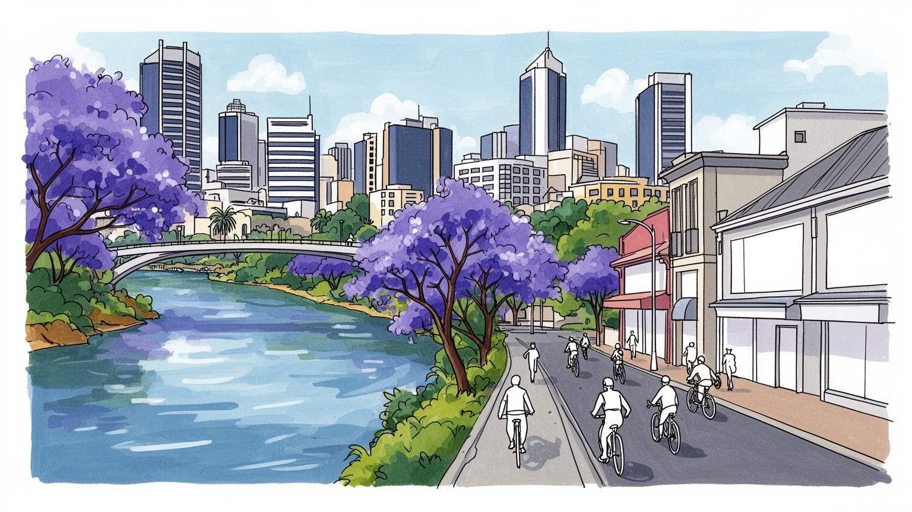
ブリスベンは州都として、資源地帯、太平洋島嶼、観光海岸、防衛、環境政策を結びます。連邦首都ではありませんが、北東部の実務判断、災害対応、空港を介した観光戦略が集まる都市です。川の都心で州の広さを扱います。
州政府、大学群、病院、建設、観光、空港物流が雇用を作ります。鉱山現場は遠くても、契約、設計、研修、清掃、介護、調理、配達の仕事が都市の毎日と夜を支えます。学生、市場、球場の仕事も街の重要な基盤です。
先住民の土地記憶、英国系の制度、アジア太平洋からの移住、教会、モスク、寺院、劇場、音楽、ラグビーリーグが文化を形づくります。川岸の祭りと郊外の礼拝が、亜熱帯の都市生活に今も季節感を与える大きな街です。
住民は車、鉄道、バス、フェリーで郊外と中心を往復し、旅行者はサウスバンク、公園、市場、劇場、動物園、島へ向かいます。穏やかな冬と屋外生活の魅力の下で、住宅費、暑さ、洪水、通勤が日々の課題になる都市です。
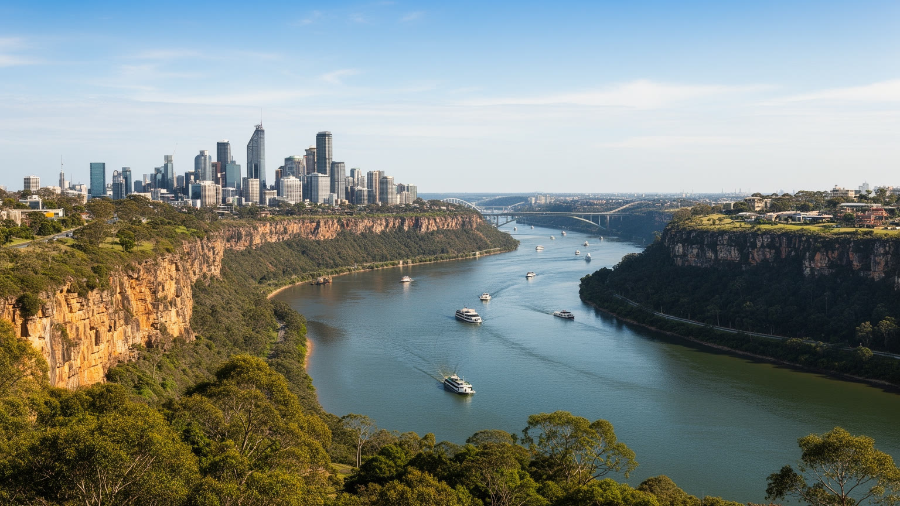
ブリスベンの都市構造は、ブリスベン川の曲がりを抜きに理解できません。川は中心市街地を大きく蛇行し、半島状の都心、サウスバンク、大学、住宅地、港湾側の低地をつなぎながら、同時に移動を難しくしてきました。橋の位置は通勤経路、商業地の強さ、住宅地の価値を左右し、フェリーは観光用の乗り物である前に、川沿いの生活を結ぶ公共交通でもあります。周囲の丘陵は眺望と緑を与える一方、谷筋や低地には浸水の記憶が残ります。川岸の遊歩道、芝生、カフェ、文化施設は都市の魅力を高めますが、同じ水辺は豪雨時に危険な境界へ変わります。朝は通勤客、学生、ランナーが川風の中を動き、夜はサウスバンクの灯りや劇場帰りの人波が水面に映ります。これは計画的な景観だけでなく、川が都市を細かく分けた結果です。水辺を都市の正面として使えることが成長の力になった半面、道路容量、避難、保険、再開発の判断には常に地形が関わります。ブリスベンの地図は直線的な格子ではなく、水と丘に合わせて折れ曲がる生活の地図です。その読み方を持つと、中心部の近さと郊外の遠さ、川の美しさと洪水への不安が同じ都市条件として見えてきます。川沿いの公園や住宅を楽しむことは、水の気配を受け入れて暮らすことでもあります。鳥の声、湿った土の匂い、フェリーの低い音も、この都市を感覚で覚える手がかりです。
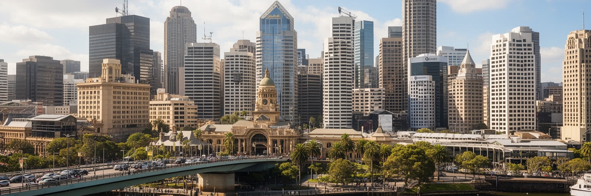
ブリスベンはオーストラリアの連邦政治の中心ではありませんが、クイーンズランド州を動かす行政の中枢です。州議会、政府機関、裁判所、警察、病院、大学、報道機関が都心と周辺に集まり、北部の鉱山、農業地帯、観光地、先住民コミュニティ、沿岸環境、離島まで含む広い州の課題を扱います。州都機能は、華やかな首都儀礼よりも、予算、インフラ、防災、医療、教育、資源開発、環境規制を処理する実務として現れます。ブリスベンの政治性は、遠くの地域で起きる洪水、サイクロン、サンゴ礁保全、鉱山雇用、道路整備が、都心の会議室とメディアに集まる点にあります。南東クイーンズランドの人口増加は州政の重心を強める一方、地方部との利害差も大きくします。沿岸観光と資源産業、環境保護と雇用、先住民の権利と開発計画は、州都の政策判断を通じて都市の日常にも戻ってきます。ブリスベンを州都として読むことは、CBDのビル群だけでなく、広大な州を支える病院紹介、大学進学、公務員の異動、災害対応の訓練まで見ることです。空港はリーフ、島、内陸観光へ向かう玄関口で、ニュース編集部やラジオは遠い町の出来事を都心へ運びます。行政は抽象的な制度ではなく、暑さ、雨、道路、学校、住宅供給を調整する日々の仕事として都市空間に埋め込まれています。地方の声を都心がどう聞くかも重要です。
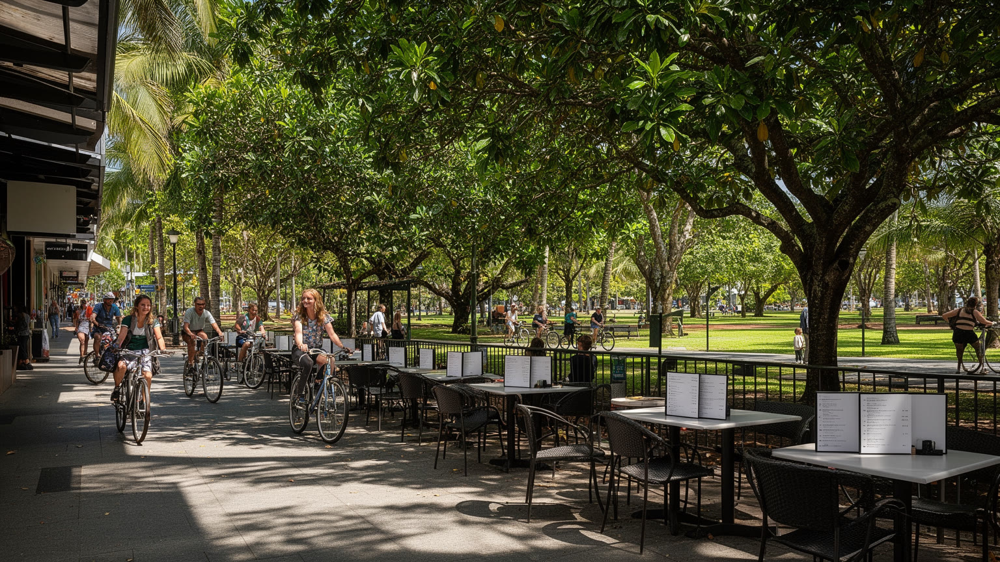
ブリスベンの日常は、亜熱帯の気候と深く結びついています。冬は明るく乾き、朝の散歩、川沿いのランニング、屋外席、週末の市場、公園での食事が生活の一部になります。木陰、ベランダ、通風、庇を重視する住宅の形は、暑さを避けながら外とつながる工夫でもあります。古いクイーンズランダー住宅は高床、広いベランダ、軽い素材で気候に応じてきましたが、近年の集合住宅や再開発では空調への依存が強まり、電力使用と室内外の断絶も増えています。夏の蒸し暑さ、激しい夕立、日差し、紫外線は、働き方、学校、スポーツ、屋外労働に直接影響します。子どもには日陰のある通学路、水分補給、雷雨時の迎えが必要で、高齢者には停電時の冷房、避難情報、近所の見守りが命に関わります。快適な屋外生活は都市の魅力ですが、木陰の少ないバス停、断熱の弱い賃貸住宅、冷房費を抑える世帯、建設現場や配送で働く人には暑さが健康リスクになります。亜熱帯の暮らしを都市の強みにするには、公園や川岸の美しさだけでなく、涼める公共空間、緑陰、歩きやすい街路、断熱改修、職場の暑熱対策が必要です。学校の校庭、買い物帰りの道、夜の飲食街でも、風と日陰をどう作るかが生活の質を左右します。朝の湿った空気や夕立後の土の匂いも、季節を知らせます。日常の快適さは天気任せではなく、設計と維持管理で作られます。
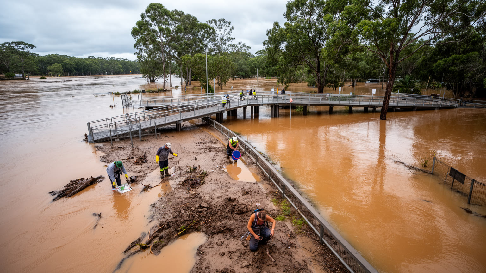
ブリスベンの記憶には洪水が深く刻まれています。大雨で川が増水すると、普段は散歩や食事の場所である水辺が、住宅、道路、店舗、地下設備、フェリー桟橋を脅かします。上流の雨、ダム運用、支流、低地の排水、潮位が重なり、被害の出方は地区ごとに異なります。洪水は一度の災害で終わらず、家の修繕、保険料、事業再開、学校の休止、写真や家具を失った記憶として長く残ります。新しい住宅地や川沿いの再開発では、眺望と資産価値の魅力がリスク評価と衝突します。小さな店やマーケットの屋台は在庫と冷蔵設備を失いやすく、高齢者、障害者、英語に不慣れな移民世帯は避難情報へ届きにくい場合があります。子どもには通学再開と心の安定が必要です。高床化、防水建材、避難計画、ハザード情報、早期警報、排水路の管理は不可欠ですが、低所得世帯や賃貸住民ほど備えを自分で選びにくいです。洪水対策を堤防やダムだけで語ると、地域の助け合い、避難所、ペット、外国語情報、事業者支援が抜け落ちます。水辺を公共空間として開くことと、危険な場所へ無理に人を集めないことの両立が重要です。災害後の泥を洗う音、家具を積んだ車、支援物資の列を記憶し、復旧の遅い地区へ支援を届ける都市であることが求められます。経験を忘れない学校教育や地域訓練も、次の被害を小さくします。
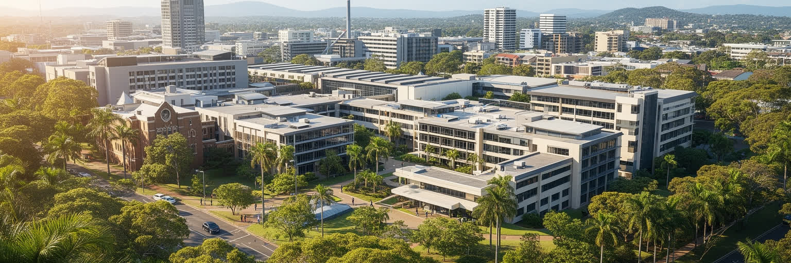
ブリスベンの経済は、州都機能に加えて教育、医療、研究、観光、建設、専門サービス、技術職の集積で支えられています。クイーンズランド大学、クイーンズランド工科大学、グリフィス大学などには国内外から学生が集まり、医学、工学、環境、デザイン、ビジネス、情報技術の人材を育てます。大規模病院と研究機関は、州全域から患者と専門職を引き寄せ、医療都市としての役割を強めます。鉱業や農業の現場は遠くにあっても、契約、法律、金融、環境評価、機械保守、遠隔管理の仕事はブリスベンに集まりやすいです。観光は市内だけでなく、ゴールドコースト、サンシャインコースト、グレートバリアリーフへの玄関口として広域に関わります。建設業は人口増加と交通投資を支えますが、技能不足、資材費、労働安全、住宅価格の問題も抱えます。成長産業の語りの背後には、清掃、介護、調理、警備、配送、病院の夜勤、学生のアルバイトがあります。留学生は教室だけでなく、カフェ、スーパー、夜の飲食街、市場の仕事でも都市を支えます。教育と医療が強い都市は、景気の波に比較的耐えやすいですが、家賃が上がれば学生、看護師、若い研究者、サービス職は中心部から押し出されます。大学群は研究成果だけでなく、地域講座、学生スポーツ、音楽イベントを通じて街の文化も厚くします。産業の厚みは、病棟、研究室、工事現場、空港の早朝勤務にも表れます。
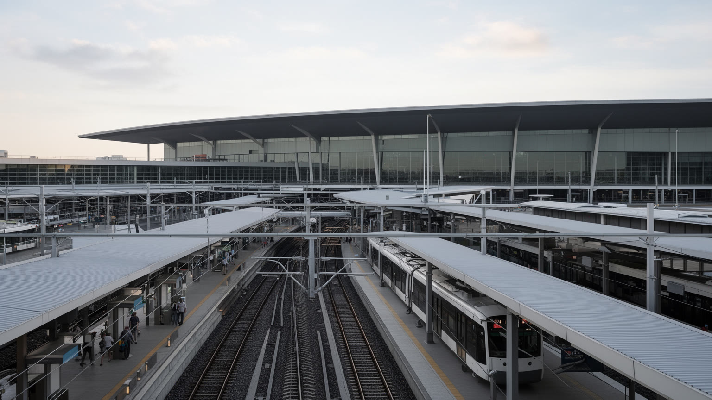
ブリスベンの移動は、川を越えることと郊外へ広がることの二つに縛られています。中心部には鉄道、バスウェイ、フェリーが集まり、橋とトンネルが川の蛇行を短くしますが、都市圏は南北東西へ大きく伸びるため、車依存はなお強いです。通勤時間は住宅価格と密接に結びつき、中心に近い便利な地区ほど高く、遠い郊外ほど車と高速道路への依存が増えます。バスウェイは専用走行で都市の強みになってきましたが、駅や停留所から先の歩行環境、日陰、自転車、夜間の安全が弱いと、公共交通を選びにくいです。ブリスベン空港は国内線と国際線の結節点で、ゴールドコースト、サンシャインコースト、グレートバリアリーフへ向かう観光客、ビジネス、貨物、留学、家族訪問を支えます。空港周辺には物流、整備、ホテル、工業団地が広がり、港湾や高速道路と結びつきます。大規模イベントやオリンピック準備に備えて交通投資が進むほど、工事期間の混雑、費用、土地収用、郊外格差が議論になります。ブリスベンの交通政策は、速い都心アクセスだけでなく、暑い日に歩ける道、川を渡る選択肢、外縁部の通勤負担、空港労働者の早朝深夜移動まで含めて考える必要があります。試合やコンサートの夜には駅の混雑、配車待ち、警備、清掃が一体で動きます。乗り換えの分かりやすさや停留所の日陰も、暑い都市では小さな快適さではなく利用を左右する条件です。
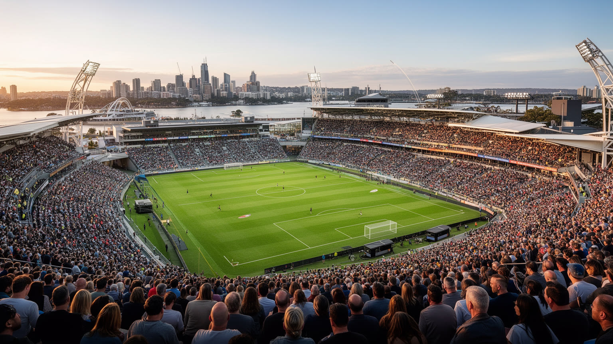
ブリスベンの文化は、サウスバンク周辺の美術館、博物館、劇場、図書館、音楽施設だけでなく、ウェストエンドやフォーティテュードバレーのライブハウス、バー、クラブ、大学、先住民アート、郊外の市場や教会行事から成り立ちます。川沿いの文化地区は観光客にも分かりやすい入口ですが、都市の表現は中心部だけで完結しません。音楽、コメディ、デザイン、映画、ストリートカルチャーは、比較的ゆるやかな都市規模と若い人口に支えられてきました。夜になると屋外席の匂い、演奏前の列、試合後のユニフォーム姿が街の気配を変えます。スポーツではラグビーリーグが強い存在感を持ち、クリケット、オーストラリアンフットボール、サッカー、テニス、陸上、水泳が生活のリズムを作ります。大規模大会やオリンピック準備は都市を世界へ見せる機会になる一方、費用、会場整備、交通、住宅、公共空間の使い方をめぐる議論も避けられません。Riverfireの花火やフェスティバルは祝祭の顔を作りますが、夜間交通、警備、清掃、騒音との調整にも支えられています。テレビやラジオの試合報道は翌朝の職場や学校、身近な地域のカフェでの会話を作ります。大きな大会の熱気が過ぎた後も、練習場、図書館、小劇場、地域クラブ、若い音楽家の発表場所が残ることが文化都市の底力になります。
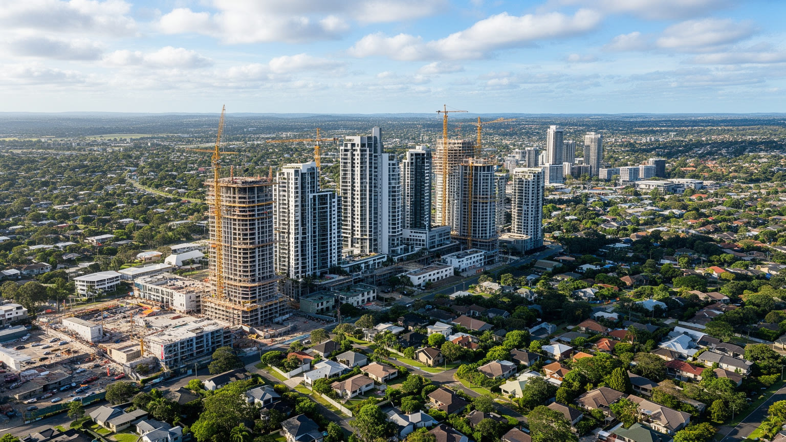
ブリスベンの住宅問題は、急速な人口増加と都市の魅力が生んだ最も身近な課題です。かつてはシドニーやメルボルンより手頃な大都市として見られましたが、州内外からの移住、在宅勤務の広がり、投資需要、建設費の上昇で価格と家賃は重くなりました。中心部や川沿いでは高層集合住宅が増え、古い住宅地では低層の街並みと密度上昇の間で議論が起きます。外縁部の新興住宅地は広い家を得やすい一方、職場、学校、病院、鉄道から遠くなり、車の維持費と通勤時間が生活を圧迫します。洪水リスクのある低地や暑さの厳しい地区では、住宅の安さが安全性や快適性の低さと結びつくこともあります。賃貸市場では学生、単身者、移民、低所得世帯、介護や飲食で働く人が特に不安定になりやすいです。子育て世帯は学校と公園、高齢者は医療と買い物、若者は家賃と夜の帰宅を気にします。住宅供給を増やすだけでなく、公共交通、緑地、学校、買い物、医療、日陰、断熱、防災を同時に整えなければ、成長は暮らしやすさを壊します。買い物通りやマーケットが近い地区は便利ですが、賃料上昇で小店が残りにくくなる面もあります。地域クラブや図書館が近いことも、世代を越えた安心になります。川沿いの眺望と郊外の庭を魅力として保つには、家賃、交通、気候リスクを一つの政策として扱う必要があります。
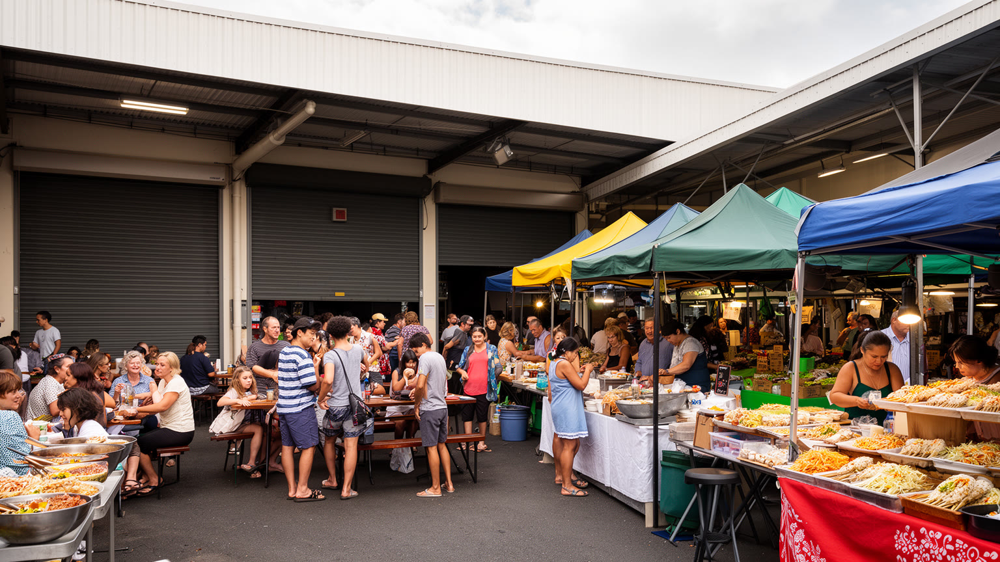
ブリスベンの食と日常は、川沿いの店、郊外の市場、アジア系食堂、カフェ、パブ、屋外バーベキュー、週末の農産物マーケットが重なってできています。クイーンズランドの農産物、海産物、熱帯果物、コーヒー文化は、都市の明るいイメージを支えます。中国、ベトナム、韓国、インド、中東、太平洋島嶼系の食は、移民の商売と家族の記憶を通じて郊外の地図を豊かにしています。市場では果物の匂い、パンを焼く香り、朝のコーヒー、現金とカードを扱う小商いが混じり、路上経済の感覚が見えます。食は観光客にとって楽しみであると同時に、学生、病院勤務者、建設労働者、公務員、家族連れが一日の時間を調整する実用品でもあります。厨房や市場の裏側には、早朝の仕入れ、冷蔵物流、配達、清掃、長時間労働、家賃、移民資格、食品規制があります。川沿いの飲食地は華やかですが、家賃が上がれば小さな店や住民向けの価格帯は保ちにくいです。食文化を都市の魅力として語る時には、料理の多様さだけでなく、働く人の賃金、店舗の継続、夜間交通、暑い厨房の環境も見なければなりません。買い物は大型モールだけでなく、八百屋、惣菜店、フードトラック、夜市の会話にも現れます。子ども連れや高齢者にも市場は身近な外出先です。味、湿気、音楽、川風が混じる場面に、観光名所より細かな都市の表情があります。
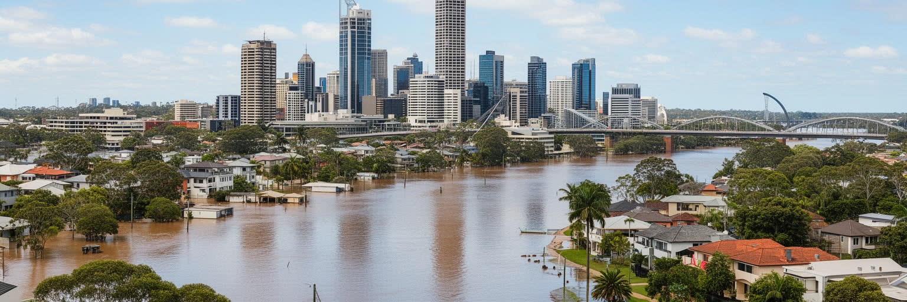
ブリスベンは、晴れた川岸と穏やかな生活の都市として語られやすいです。確かに、冬の明るさ、サウスバンクの公園、フェリー、大学、文化施設、郊外の庭、海岸や島への近さは強い魅力です。しかし都市を深く読むには、その快さを支える条件と弱点を同じ地図に置く必要があります。州都としての行政、広いクイーンズランドをつなぐ医療と教育、資源地帯との経済関係、空港を介した観光ゲートウェイ、先住民の土地記憶、移民の食堂、スポーツと音楽の夜は、川沿いの景観の背後で互いにつながっています。洪水リスク、暑さ、住宅費、車依存、郊外格差は、都市の魅力を否定するものではなく、その魅力を長く保つために直視すべき条件です。ブリスベンの中心は単なるCBDではなく、川、橋、病院、大学、官庁、住宅地、空港、市場、公園がつくる広い生活圏です。旅行者が水辺を歩き、住民が通勤し、学生が学び、子どもと高齢者が暑さや水害に備える時、同じ都市の異なる層が動いています。ラグビーリーグの歓声、クリケットの夏、Riverfireの煙、バレーの音楽、マーケットの朝、洪水後の静けさは別々の風景ではありません。ブリスベンを総合的に理解することは、亜熱帯の明るさを楽しみながら、水と暑さと成長をどう公平に管理するかを見ることです。川の都市を読む視線は、景観と制度と日常を結び直す視線です。